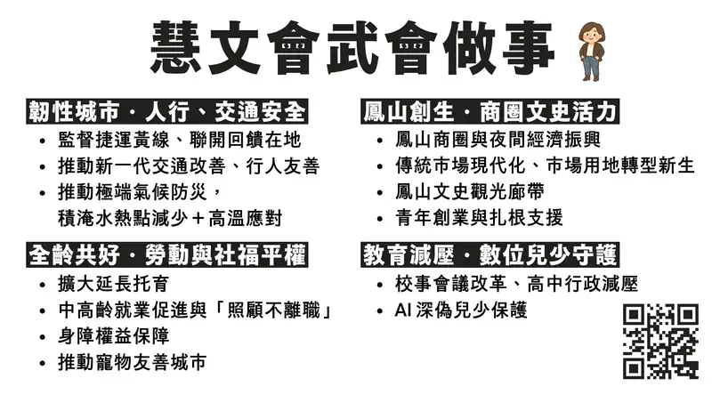

高雄市第5屆議員選舉
查看原始政見圖卡

韌性城市・人行、交通安全
監督捷運黃線、聯開回饋在地
本站尚未為此項連結對應專題。推動新一代交通改善、人行友善
相關公開紀錄：鳳山車站・曹公圳・捷運步行廊道 →、橫斷旗通學安全建議 →推動極端氣候防災，積淹水熱點減少 + 高溫應對
相關公開紀錄：八德滯洪池與防汛整備 →
鳳山創生・商圈文史活力
鳳山商圈與夜間經濟振興
本站尚未為此項連結對應專題。傳統市場現代化、市場用地轉型新生
相關公開紀錄：鳳二市場活化與參與式預算追蹤 →鳳山文史觀光廊帶
本站尚未為此項連結對應專題。青年創業與扎根支援
本站尚未為此項連結對應專題。
全齡共好・勞動與社福平權
擴大延長托育
本站尚未為此項連結對應專題。中高齡就業促進與「照顧不離職」
本站尚未為此項連結對應專題。身障權益保障
相關公開紀錄：身障學生寒暑假與課後照顧支持 →推動寵物友善城市
本站尚未為此項連結對應專題。
教育減壓・數位兒少守護
校事會議改革、高中行政減壓
相關公開紀錄：校事會議分流與專業支持 →、高中職行政人力增置評估 →AI 深偽兒少保護
本站尚未為此項連結對應專題。
資料來源：2026 政見圖卡
官網收錄日期：2026-09-09。
高雄市第4屆議員選舉
第9選舉區（鳳山區） · 9號 · 當時身分：第3屆高雄市議員
投票日：
2050碳中和
監督市府碳中和計畫，嚴格要求市府以身作則，作為典範。加速推動大眾運輸與私人車電動化。
推動農業達成「碳中和」，並轉型為碳權產業，增加附加價值，與企業互利互助，提供碳權交易，促使農民、企業、生態三贏的契機。
智慧交通
全面盤點、改善不合時宜的用路環境。推動合適路口機車左轉，支持用路平權。
推動捷運、輕軌、公車大眾運輸路網整合與改善，朝人本交通方向邁進。
智慧醫療
推動智慧照護中心與社區視訊診所，省時省力又安心。
安心生養
推動以容積獎勵為誘因，鼓勵建商提供空間作為社福公益使用，達成「取之於社會，用之於社會。」之精神。
完善社會長照、日照、托兒服務，並推動資源整合，減少社會成本的浪費。
雙語教育
完善雙語教育，增加雙語外師，培養學生語言能力。
上下學平安
推動學校周圍增設科技執法，減少導護志工人力，「開心上下學、平安接送。」
鳳山中城
推動東高雄發展，打造高雄中城計畫，市府整合遷鳳山，節省行政成本。
鳳山智慧之心
推動五甲路以東作為碳中和未來經濟區，結合無人車、智慧號誌、智慧消防、綠能建設、智慧照護、智慧醫療，創造出未來城市的模樣。
高雄市第3屆議員選舉
第9選舉區（鳳山區） · 8號 · 當時身分：第2屆高雄市議員
投票日：
政見
鳳山車站專區發展，鐵路地下化景觀動線重新盤整，帶動整體商圈發展。
啟動交通動能，設環城自行車道，配合鐵路、捷運與輕軌，強化轉運功能。
高雄向東發展，都市更新再造，綠色生態與公設就位，並催生鳳山新影城。
閒置空間再造，眷村懷舊探索、工業區轉型，成立鳳山創意產業育成中心。
世代共生，老青聯網，推動社區老幼弱照護據點，爭取生托育幼最優補助。
傳統市場街區創新改善，包裝行銷，辦理在地節慶活動，營造鳳山印象。
設旅遊中心，整合旅遊景點，串聯藝文，市場與街區，包裝鳳山城市美學。
落實社區運動空間，爭取國民運動中心，推多元運動型態，開發運動經濟。
主張台灣中國，一邊一國。
扁案是政治事件，應予平反。
高雄市第2屆議員選舉
第9選舉區（鳳山區） · 11號 · 當時身分：第1屆高雄市議員
投票日：
政見
爭取經費優先開闢鳳山消防救災不易之計畫道路。
爭取經費裝設監視器，以保障市民生命財產安全。
促進產業升級轉型、發展具有地方特色、企業結合觀光產業、增加就業機會。
督促高雄市第77期市地重劃區儘速完成，興建公園綠地道路等公共設施，強化其生活機能。
督促高雄市鳳山區五甲路東側區段徵收進度，爭取公共設施用地興建多功能活動中心，提升社區生活品質，鄰近5里有集會空間。
加強高雄市文化藝文活動，提升人民心靈知識。
落實婦幼政策，保障婦女權利。
加強社會福利，照顧弱勢團體。
鳳山溪沿岸及曹公圳整治美化，並加強管理維護。
主張「台灣中國，一邊一國」。
「扁案」是政治事件，應予平反。
傾聽民意，為民服務。
高雄市第1屆議員選舉
第9選舉區（鳳山區） · 7號 · 當時身分：第16屆高雄縣議員
投票日：
政見
推動電動公車及低排碳大眾運輸，邁向無碳城市目標。
提高生育、托育補助津貼，鼓勵生兒育女。
推動高雄市國中小全面免費營養午餐。
降低國中小班級人數、增加教師需求量。
單親、中低收入、隔代教養、等弱勢家庭提供免費安親課輔。
廣設社區老人關懷據點，老吾老以及人之老。
將鳳山市區招牌更換成節能精緻減碳招牌。
鳳山溪以北沿岸及曹公圳整治美化並加強管理維護。
建立農產品的行銷通路，使鳳山成為農產品的行銷集散地。
促進高雄投資環境、增加就業機會。
推動社區營造，將國有或閒置空地綠化，優質我們的生活環境。
主張以臺灣名義加入聯合國，ECFA要公投，人民做主。
打造文化、觀光、產業的鳳山城。
高雄縣第16屆議員選舉
第1選舉區（鳳山市） · 14號 · 當時身分：第15屆高雄縣議員
投票日：
政見
改善警政、增設監視器、改善治安。
督促政府整頓交通、增設停車場、改善交通品質。
促進產業升級轉型、發展具有地方特色、企業結合觀光產業、增加就業機會。
堅持環境保護、水土保持、決不讓大地再遭蹂躪。
加強高雄縣文化藝文活動、提昇人民的心靈知識。
落實婦幼政策、保障婦幼權利。
加強社會福利、照顧弱勢團體。
監督縣政、捍衛人民福祉。
高雄縣第15屆議員選舉
資料待補：中選會資料庫確認第1選舉區、17號、當選；政見公報全文尚未取得。
第8屆鳳山市民代表
資料待補：後續官方公報可確認曾任；本次未取得當屆公報，選舉年份、選區與政見全文尚待原始資料。
前後屆政見，放在一起讀
以下按相近主題對照原文，並不表示已確認承諾延續或完成。目標、期限與政府執行情形仍須逐項核對。
大眾運輸與在地交通
2022 原文
閱讀 2022 原文與來源 ↓推動捷運、輕軌、公車大眾運輸路網整合與改善，朝人本交通方向邁進。
2026 原文
閱讀 2026 原文與來源 ↓監督捷運黃線、聯開回饋在地
兩份原文均涉及捷運或大眾運輸；本表只提供原文對讀，尚未確認是否為同一承諾的延續，也未判定完成情形。
延續關係：待確認 · 完成情形：尚未評估
托育與照顧服務
2022 原文
閱讀 2022 原文與來源 ↓完善社會長照、日照、托兒服務，並推動資源整合，減少社會成本的浪費。
2026 原文
閱讀 2026 原文與來源 ↓擴大延長托育
2022 原文包含托兒服務，2026 原文提出延長托育；服務範圍、量化目標與延續關係仍須補充核實。
延續關係：待確認 · 完成情形：尚未評估